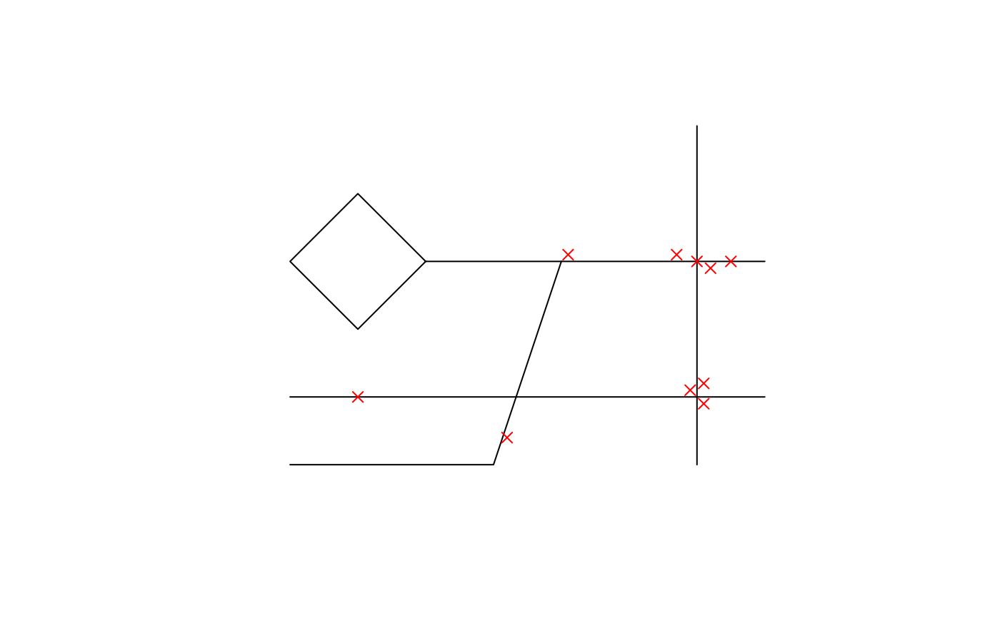

A sample dataset containing information about 10 accidents. The dataset is for demonstration and testing and does not represent real-world events.
Format
A sf object with 10 rows and 4 columns:
- id
Accident ID
- time
Time of the accident (in hours)
- weather
Weather condition at the time of the accident
- severity
Severity of the accident
- geometry
Point geometry of the accident location
Examples
# Show information about the accidents
sample_accidents
#> Simple feature collection with 10 features and 4 fields
#> Geometry type: POINT
#> Dimension: XY
#> Bounding box: xmin: 1 ymin: 0.4 xmax: 6.5 ymax: 3.1
#> CRS: NA
#> id time weather severity geometry
#> 1 ac_0001 18 Sunny Minor POINT (1 1)
#> 2 ac_0002 4 Foggy Fatal POINT (3.2 0.4)
#> 3 ac_0003 13 Snowy Minor POINT (4.1 3.1)
#> 4 ac_0004 23 Sunny Minor POINT (5.7 3.1)
#> 5 ac_0005 7 Rainy Minor POINT (5.9 1.1)
#> 6 ac_0006 7 Sunny Minor POINT (6 3)
#> 7 ac_0007 19 Cloudy Minor POINT (6.1 0.9)
#> 8 ac_0008 8 Sunny Minor POINT (6.1 1.2)
#> 9 ac_0009 19 Rainy Serious POINT (6.2 2.9)
#> 10 ac_000a 20 Sunny Minor POINT (6.5 3)
# Plot the locations of the accidents
plot(sample_roads$geometry)
plot(sample_accidents$geometry, pch = 4, col = "red", add = TRUE)
